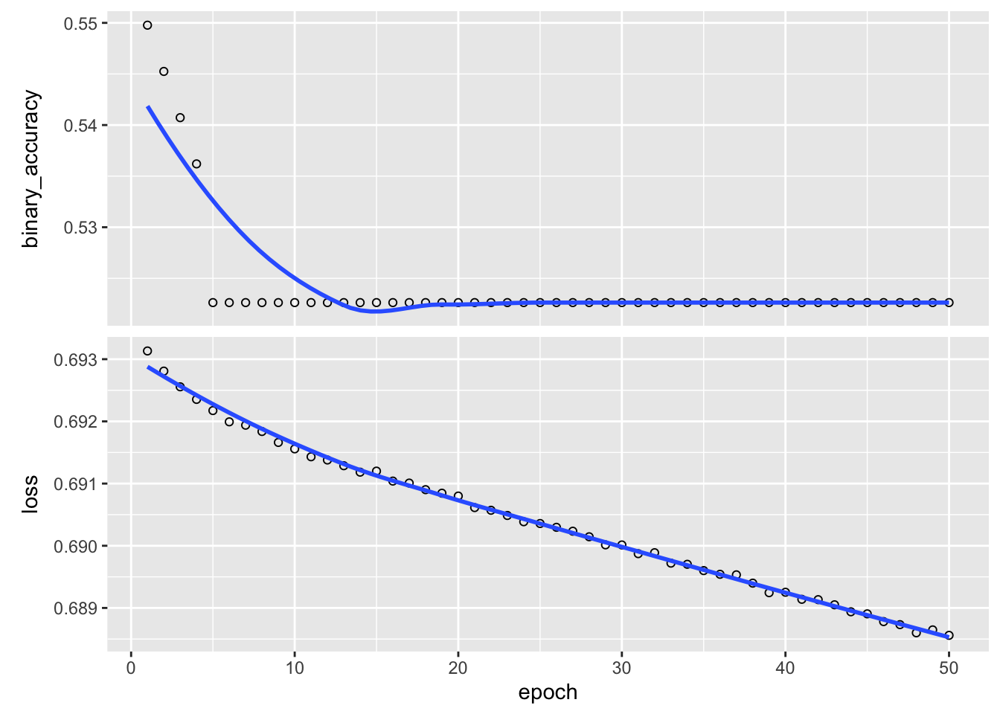
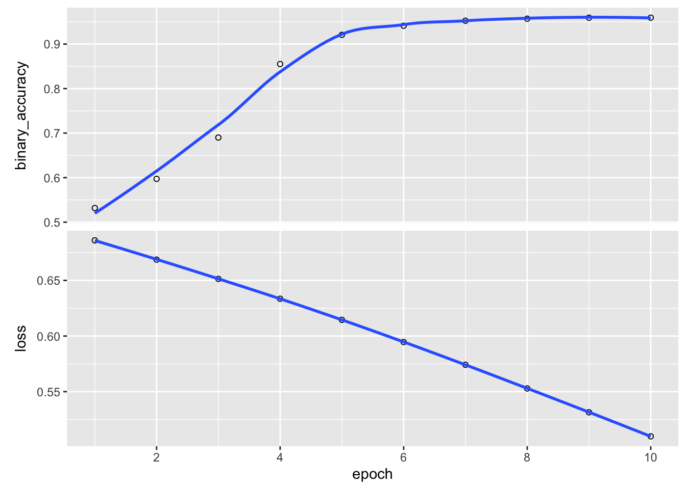
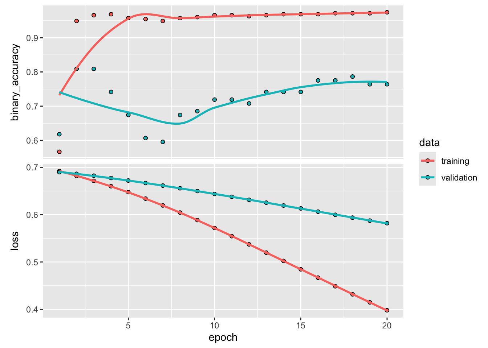

library(keras)
install_keras()Training neural networks
Python installation
We will use packages that interface to python from R to train neural networks in this lab. For this a current python installation is needed.
Select the download appropriate for your operating system here and follow installation instructions.
Keras and Tensorflow
Open RStudio and execute the following commands in the console. You should have already installed keras with other packages in the first lab; however, if library(keras) returns an error execute install.packages('keras') and then try again. This will install Tensorflow (for python) in a manner suitable for use in R, along with a few other packages.
To confirm the installation worked, try:
library(tensorflow)
tf$constant('Hello world')tf.Tensor(b'Hello world', shape=(), dtype=string)You may see a long message related to CUDA libraries in addition to the output shown above, but if you see this output at the end, your installation was successful.
If you did not see the expected output, try configuring a virtual environment for the installation explicitly as shown here.
If you are unable to troubleshoot after a short period of time, partner with a classmate for the lab activity and then ask for help from course staff.
Lab activity
Setup
Action
Setup
Open a new script for this lab, copy-paste the code chunk below at the top of the script, and execute once.
# packages
library(tidyverse)
library(tidymodels)
library(tidytext)
library(keras)
library(tensorflow)
# data location
url <- 'https://raw.githubusercontent.com/pstat197/pstat197a/main/materials/labs/lab6-nn/data/claims-clean.csv'
# read in data
clean <- read_csv(url)Now partition the data into training and test sets.
Action
Data partitioning
- Copy the code chunk below into your script but do not run the resulting lines.
- Coordinate with your neighbor: choose a new RNG seed and split proportion and input the same values in each of your scripts.
- Execute lines to partition the data.
# partition
set.seed(102722)
partitions <- clean %>%
mutate(text_clean = str_trim(text_clean)) %>%
filter(str_length(text_clean) > 5) %>%
initial_split(prop = 0.8)Now use the code chunk below to preprocess the training partition into a TF-IDF document term matrix (DTM), as before.
train_dtm <- training(partitions) %>%
unnest_tokens(output = 'token',
input = text_clean) %>%
group_by(.id, bclass) %>%
count(token) %>%
bind_tf_idf(term = token,
document = .id,
n = n) %>%
pivot_wider(id_cols = c(.id, bclass),
names_from = token,
values_from = tf_idf,
values_fill = 0) %>%
ungroup()Logistic regression as NN
To get a feel for keras, first we’ll fit a logistic regression model.
Recall that in class it was mentioned that standard statistical models can be described by neural networks with no hidden layers; along these lines, standard statistical models can also be fit using optimization routines for neural network training.
Use the code chunk below to get the TF-IDF values for the (alphabetically) first ten tokens. We’ll use these as predictors.
# extract first ten features
x_train <- train_dtm %>%
ungroup() %>%
select(-.id, -bclass) %>%
select(1:10) %>%
as.matrix()
# extract labels and coerce to binary
y_train <- train_dtm %>%
pull(bclass) %>%
factor() %>%
as.numeric() - 1This is purely for illustration purposes; any model using these variables should not perform well at all because ten tokens won’t contain much information about the classes.
To use keras, we’ll go through a few steps that are generally not done separately for fitting statistical models:
Model specification, i.e.,defining an architecture
Model configuration, i.e., specifying a loss function and fitting method
Model training, i.e., computing estimates for the parameters
Model specification
Model architecture is defined layer-by-layer. Keras has some preconfigured model types: for feedforward networks, use keras_model_sequential() .
# specify model type
library(keras3)
model <- keras_model_sequential(input_shape = 10)The input_shape argument specifies the number of units for the input layer – in other words, the number of predictors.
At this stage, the model is just scaffolding:
summary(model)<Sequential name=sequential, built=False>Now layers can be added one-by-one. For now we’ll just add an output layer – one unit. layer_dense will specify that the previous layer is fully-connected to the added layer.
# add output layer
model <- model %>% layer_dense(1) The model summary now shows the output layer.
summary(model)Model: "sequential"
┏━━━━━━━━━━━━━━━━━━━━━━━━━━━━━━━━━━━┳━━━━━━━━━━━━━━━━━━━━━━━━━━┳━━━━━━━━━━━━━━━┓
┃ Layer (type) ┃ Output Shape ┃ Param # ┃
┡━━━━━━━━━━━━━━━━━━━━━━━━━━━━━━━━━━━╇━━━━━━━━━━━━━━━━━━━━━━━━━━╇━━━━━━━━━━━━━━━┩
│ dense (Dense) │ (None, 1) │ 11 │
└───────────────────────────────────┴──────────────────────────┴───────────────┘
Total params: 11 (44.00 B)
Trainable params: 11 (44.00 B)
Non-trainable params: 0 (0.00 B)Lastly, we’ll add a sigmoid activation function:
model <- model %>%
layer_activation(activation = 'sigmoid')Since there is no hidden layer, our model is
\[ \begin{aligned} \mathbb{E}Y &= \frac{1}{1 + \exp\{-T\}} \\ T &= X\beta \end{aligned} \]
Notice that this is the logistic regression model (without the distributional assumption).
Model configuration
Configuring a keras model consists in equipping it with a loss and an optimization method. Optionally, metrics that you’d like computed at each training epoch can be included.
model %>% compile(
loss = 'binary_crossentropy',
optimizer = optimizer_sgd(),
metrics = 'binary_accuracy'
)This says that to train the model, we’ll minimize binary cross-entropy on the training data using stochastic gradient descent.
To train for 10 epochs, pipe the model into fit() and supply the training data. Note that the training data must be numeric, not a data frame.
history <- model %>%
fit(x = x_train,
y = y_train,
epochs = 10)Epoch 1/10
14/14 - 0s - 9ms/step - binary_accuracy: 0.5181 - loss: 0.6929
Epoch 2/10
14/14 - 0s - 755us/step - binary_accuracy: 0.5181 - loss: 0.6928
Epoch 3/10
14/14 - 0s - 718us/step - binary_accuracy: 0.5226 - loss: 0.6927
Epoch 4/10
14/14 - 0s - 735us/step - binary_accuracy: 0.5249 - loss: 0.6927
Epoch 5/10
14/14 - 0s - 732us/step - binary_accuracy: 0.5249 - loss: 0.6927
Epoch 6/10
14/14 - 0s - 711us/step - binary_accuracy: 0.5226 - loss: 0.6926
Epoch 7/10
14/14 - 0s - 722us/step - binary_accuracy: 0.5226 - loss: 0.6925
Epoch 8/10
14/14 - 0s - 653us/step - binary_accuracy: 0.5226 - loss: 0.6925
Epoch 9/10
14/14 - 0s - 684us/step - binary_accuracy: 0.5226 - loss: 0.6925
Epoch 10/10
14/14 - 0s - 669us/step - binary_accuracy: 0.5226 - loss: 0.6924The following commands will retrieve weights, evaluated loss ans specified metrics, and predictions.
# retrieve weights
get_weights(model)[[1]]
[,1]
[1,] 0.58142787
[2,] 0.15551396
[3,] 0.25022969
[4,] -0.31892708
[5,] 0.25630677
[6,] -0.56206506
[7,] -0.08791244
[8,] 0.02716295
[9,] -0.04227780
[10,] 0.47632855
[[2]]
[1] 0.02610925# evaluate on specified data
evaluate(model, x_train, y_train)14/14 - 0s - 3ms/step - binary_accuracy: 0.5226 - loss: 0.6924$binary_accuracy
[1] 0.5226244
$loss
[1] 0.6923724# compute predictions
model(x_train) %>% head()tf.Tensor(
[[0.5083081]
[0.5074488]
[0.507737 ]
[0.5075881]
[0.5067418]
[0.5073227]], shape=(6, 1), dtype=float32)
Action
Check your understanding
Discuss with your neighbor:
- How many parameters does this model have?
- Do the number of parameters match your expectations?
- Why will the parameter estimates not match the result of
glm()? - Would further training epochs improve the performance?
Single-layer network
Now that you have a sense of the basic keras syntax and model specification/configuration/training procedure, we can train a proper network with one (or more!) hidden layers.
First coerce the DTM into the format needed for training.
# store full DTM as a matrix
x_train <- train_dtm %>%
select(-bclass, -.id) %>%
as.matrix()Now configure a model with one hidden layer having 10 units. Notice that the architecture can be defined by one sequence of pipes rather than stepwise as before.
model <- keras_model_sequential(input_shape = ncol(x_train)) %>%
layer_dense(10) %>%
layer_dense(1) %>%
layer_activation(activation = 'sigmoid')
summary(model)Model: "sequential_1"
┏━━━━━━━━━━━━━━━━━━━━━━━━━━━━━━━━━━━┳━━━━━━━━━━━━━━━━━━━━━━━━━━┳━━━━━━━━━━━━━━━┓
┃ Layer (type) ┃ Output Shape ┃ Param # ┃
┡━━━━━━━━━━━━━━━━━━━━━━━━━━━━━━━━━━━╇━━━━━━━━━━━━━━━━━━━━━━━━━━╇━━━━━━━━━━━━━━━┩
│ dense_1 (Dense) │ (None, 10) │ 176,540 │
├───────────────────────────────────┼──────────────────────────┼───────────────┤
│ dense_2 (Dense) │ (None, 1) │ 11 │
├───────────────────────────────────┼──────────────────────────┼───────────────┤
│ activation_1 (Activation) │ (None, 1) │ 0 │
└───────────────────────────────────┴──────────────────────────┴───────────────┘
Total params: 176,551 (689.65 KB)
Trainable params: 176,551 (689.65 KB)
Non-trainable params: 0 (0.00 B)Notice the number of parameters. (Does this match your expectation?) Configure the model:
model %>%
compile(
loss = 'binary_crossentropy',
optimizer = optimizer_sgd(),
metrics = 'binary_accuracy'
)And finally, train:
history <- model %>%
fit(x = x_train,
y = y_train,
epochs = 50)Epoch 1/50
14/14 - 0s - 10ms/step - binary_accuracy: 0.5498 - loss: 0.6931
Epoch 2/50
14/14 - 0s - 1ms/step - binary_accuracy: 0.5452 - loss: 0.6928
Epoch 3/50
14/14 - 0s - 1ms/step - binary_accuracy: 0.5407 - loss: 0.6926
Epoch 4/50
14/14 - 0s - 1ms/step - binary_accuracy: 0.5362 - loss: 0.6924
Epoch 5/50
14/14 - 0s - 1ms/step - binary_accuracy: 0.5226 - loss: 0.6922
Epoch 6/50
14/14 - 0s - 1ms/step - binary_accuracy: 0.5226 - loss: 0.6920
Epoch 7/50
14/14 - 0s - 1ms/step - binary_accuracy: 0.5226 - loss: 0.6919
Epoch 8/50
14/14 - 0s - 1ms/step - binary_accuracy: 0.5226 - loss: 0.6918
Epoch 9/50
14/14 - 0s - 1ms/step - binary_accuracy: 0.5226 - loss: 0.6917
Epoch 10/50
14/14 - 0s - 1ms/step - binary_accuracy: 0.5226 - loss: 0.6916
Epoch 11/50
14/14 - 0s - 1ms/step - binary_accuracy: 0.5226 - loss: 0.6914
Epoch 12/50
14/14 - 0s - 1ms/step - binary_accuracy: 0.5226 - loss: 0.6914
Epoch 13/50
14/14 - 0s - 1ms/step - binary_accuracy: 0.5226 - loss: 0.6913
Epoch 14/50
14/14 - 0s - 1ms/step - binary_accuracy: 0.5226 - loss: 0.6912
Epoch 15/50
14/14 - 0s - 1ms/step - binary_accuracy: 0.5226 - loss: 0.6912
Epoch 16/50
14/14 - 0s - 1ms/step - binary_accuracy: 0.5226 - loss: 0.6910
Epoch 17/50
14/14 - 0s - 1ms/step - binary_accuracy: 0.5226 - loss: 0.6910
Epoch 18/50
14/14 - 0s - 1ms/step - binary_accuracy: 0.5226 - loss: 0.6909
Epoch 19/50
14/14 - 0s - 1ms/step - binary_accuracy: 0.5226 - loss: 0.6908
Epoch 20/50
14/14 - 0s - 1ms/step - binary_accuracy: 0.5226 - loss: 0.6908
Epoch 21/50
14/14 - 0s - 1ms/step - binary_accuracy: 0.5226 - loss: 0.6906
Epoch 22/50
14/14 - 0s - 1ms/step - binary_accuracy: 0.5226 - loss: 0.6906
Epoch 23/50
14/14 - 0s - 1ms/step - binary_accuracy: 0.5226 - loss: 0.6905
Epoch 24/50
14/14 - 0s - 1ms/step - binary_accuracy: 0.5226 - loss: 0.6904
Epoch 25/50
14/14 - 0s - 1ms/step - binary_accuracy: 0.5226 - loss: 0.6904
Epoch 26/50
14/14 - 0s - 1ms/step - binary_accuracy: 0.5226 - loss: 0.6903
Epoch 27/50
14/14 - 0s - 1ms/step - binary_accuracy: 0.5226 - loss: 0.6902
Epoch 28/50
14/14 - 0s - 1ms/step - binary_accuracy: 0.5226 - loss: 0.6901
Epoch 29/50
14/14 - 0s - 1ms/step - binary_accuracy: 0.5226 - loss: 0.6900
Epoch 30/50
14/14 - 0s - 1ms/step - binary_accuracy: 0.5226 - loss: 0.6900
Epoch 31/50
14/14 - 0s - 1ms/step - binary_accuracy: 0.5226 - loss: 0.6899
Epoch 32/50
14/14 - 0s - 2ms/step - binary_accuracy: 0.5226 - loss: 0.6899
Epoch 33/50
14/14 - 0s - 1ms/step - binary_accuracy: 0.5226 - loss: 0.6897
Epoch 34/50
14/14 - 0s - 1ms/step - binary_accuracy: 0.5226 - loss: 0.6897
Epoch 35/50
14/14 - 0s - 1ms/step - binary_accuracy: 0.5226 - loss: 0.6896
Epoch 36/50
14/14 - 0s - 1ms/step - binary_accuracy: 0.5226 - loss: 0.6895
Epoch 37/50
14/14 - 0s - 1ms/step - binary_accuracy: 0.5226 - loss: 0.6895
Epoch 38/50
14/14 - 0s - 1ms/step - binary_accuracy: 0.5226 - loss: 0.6894
Epoch 39/50
14/14 - 0s - 1ms/step - binary_accuracy: 0.5226 - loss: 0.6892
Epoch 40/50
14/14 - 0s - 1ms/step - binary_accuracy: 0.5226 - loss: 0.6893
Epoch 41/50
14/14 - 0s - 1ms/step - binary_accuracy: 0.5226 - loss: 0.6891
Epoch 42/50
14/14 - 0s - 1ms/step - binary_accuracy: 0.5226 - loss: 0.6891
Epoch 43/50
14/14 - 0s - 1ms/step - binary_accuracy: 0.5226 - loss: 0.6891
Epoch 44/50
14/14 - 0s - 1ms/step - binary_accuracy: 0.5226 - loss: 0.6889
Epoch 45/50
14/14 - 0s - 1ms/step - binary_accuracy: 0.5226 - loss: 0.6889
Epoch 46/50
14/14 - 0s - 1ms/step - binary_accuracy: 0.5226 - loss: 0.6888
Epoch 47/50
14/14 - 0s - 1ms/step - binary_accuracy: 0.5226 - loss: 0.6887
Epoch 48/50
14/14 - 0s - 1ms/step - binary_accuracy: 0.5226 - loss: 0.6886
Epoch 49/50
14/14 - 0s - 1ms/step - binary_accuracy: 0.5226 - loss: 0.6886
Epoch 50/50
14/14 - 0s - 1ms/step - binary_accuracy: 0.5226 - loss: 0.6886plot(history)
Notice that even after 50 epochs the results are still quite poor. As mentioned in class, the choice of optimization method can have a big impact on the quality of estimates. If we train the model instead using Adam, good accuracy is achieved after just a few epochs:
# change the optimizer
model %>%
compile(
loss = 'binary_crossentropy',
optimizer = 'adam',
metrics = 'binary_accuracy'
)
# re-train
history <- model %>%
fit(x = x_train,
y = y_train,
epochs = 10)Epoch 1/10
14/14 - 0s - 18ms/step - binary_accuracy: 0.5317 - loss: 0.6860
Epoch 2/10
14/14 - 0s - 1ms/step - binary_accuracy: 0.5973 - loss: 0.6687
Epoch 3/10
14/14 - 0s - 2ms/step - binary_accuracy: 0.6900 - loss: 0.6514
Epoch 4/10
14/14 - 0s - 1ms/step - binary_accuracy: 0.8552 - loss: 0.6335
Epoch 5/10
14/14 - 0s - 1ms/step - binary_accuracy: 0.9208 - loss: 0.6146
Epoch 6/10
14/14 - 0s - 1ms/step - binary_accuracy: 0.9412 - loss: 0.5946
Epoch 7/10
14/14 - 0s - 1ms/step - binary_accuracy: 0.9525 - loss: 0.5742
Epoch 8/10
14/14 - 0s - 1ms/step - binary_accuracy: 0.9570 - loss: 0.5529
Epoch 9/10
14/14 - 0s - 1ms/step - binary_accuracy: 0.9593 - loss: 0.5314
Epoch 10/10
14/14 - 0s - 1ms/step - binary_accuracy: 0.9593 - loss: 0.5098plot(history)
Validation data
Often training data are sub-partitioned into training and ‘validation’ sets. The validation set can be used to provide a soft estimate of accuracy during training.
This provides one strategy to avoid overfitting – the practitioner should only train as long as validation accuracy continues to increase.
Keras makes that easy by supplying an extra argument to fit(). The code chunk below trains for longer and uses 20% of the training data for validation. You should see that the training accuracy gets quite high, but the validation accuracy plateaus around 80%.
# redefine model
model <- keras_model_sequential(input_shape = ncol(x_train)) %>%
layer_dense(10) %>%
layer_dense(1) %>%
layer_activation(activation = 'sigmoid')
model %>%
compile(
loss = 'binary_crossentropy',
optimizer = 'adam',
metrics = 'binary_accuracy'
)
# train with validation split
history <- model %>%
fit(x = x_train,
y = y_train,
epochs = 20,
validation_split = 0.2)Epoch 1/20
12/12 - 0s - 24ms/step - binary_accuracy: 0.5666 - loss: 0.6920 - val_binary_accuracy: 0.6180 - val_loss: 0.6897
Epoch 2/20
12/12 - 0s - 3ms/step - binary_accuracy: 0.9490 - loss: 0.6817 - val_binary_accuracy: 0.8090 - val_loss: 0.6862
Epoch 3/20
12/12 - 0s - 2ms/step - binary_accuracy: 0.9660 - loss: 0.6713 - val_binary_accuracy: 0.8090 - val_loss: 0.6822
Epoch 4/20
12/12 - 0s - 2ms/step - binary_accuracy: 0.9688 - loss: 0.6601 - val_binary_accuracy: 0.7416 - val_loss: 0.6773
Epoch 5/20
12/12 - 0s - 2ms/step - binary_accuracy: 0.9575 - loss: 0.6475 - val_binary_accuracy: 0.6742 - val_loss: 0.6721
Epoch 6/20
12/12 - 0s - 2ms/step - binary_accuracy: 0.9547 - loss: 0.6338 - val_binary_accuracy: 0.6067 - val_loss: 0.6667
Epoch 7/20
12/12 - 0s - 2ms/step - binary_accuracy: 0.9490 - loss: 0.6194 - val_binary_accuracy: 0.5955 - val_loss: 0.6613
Epoch 8/20
12/12 - 0s - 2ms/step - binary_accuracy: 0.9575 - loss: 0.6043 - val_binary_accuracy: 0.6742 - val_loss: 0.6557
Epoch 9/20
12/12 - 0s - 3ms/step - binary_accuracy: 0.9603 - loss: 0.5885 - val_binary_accuracy: 0.6854 - val_loss: 0.6498
Epoch 10/20
12/12 - 0s - 2ms/step - binary_accuracy: 0.9660 - loss: 0.5718 - val_binary_accuracy: 0.7191 - val_loss: 0.6436
Epoch 11/20
12/12 - 0s - 2ms/step - binary_accuracy: 0.9660 - loss: 0.5545 - val_binary_accuracy: 0.7191 - val_loss: 0.6376
Epoch 12/20
12/12 - 0s - 2ms/step - binary_accuracy: 0.9632 - loss: 0.5372 - val_binary_accuracy: 0.7079 - val_loss: 0.6313
Epoch 13/20
12/12 - 0s - 2ms/step - binary_accuracy: 0.9660 - loss: 0.5197 - val_binary_accuracy: 0.7416 - val_loss: 0.6253
Epoch 14/20
12/12 - 0s - 2ms/step - binary_accuracy: 0.9688 - loss: 0.5023 - val_binary_accuracy: 0.7416 - val_loss: 0.6193
Epoch 15/20
12/12 - 0s - 2ms/step - binary_accuracy: 0.9688 - loss: 0.4845 - val_binary_accuracy: 0.7416 - val_loss: 0.6131
Epoch 16/20
12/12 - 0s - 2ms/step - binary_accuracy: 0.9688 - loss: 0.4669 - val_binary_accuracy: 0.7753 - val_loss: 0.6063
Epoch 17/20
12/12 - 0s - 2ms/step - binary_accuracy: 0.9717 - loss: 0.4488 - val_binary_accuracy: 0.7753 - val_loss: 0.5997
Epoch 18/20
12/12 - 0s - 2ms/step - binary_accuracy: 0.9717 - loss: 0.4317 - val_binary_accuracy: 0.7865 - val_loss: 0.5937
Epoch 19/20
12/12 - 0s - 2ms/step - binary_accuracy: 0.9717 - loss: 0.4148 - val_binary_accuracy: 0.7640 - val_loss: 0.5873
Epoch 20/20
12/12 - 0s - 2ms/step - binary_accuracy: 0.9745 - loss: 0.3980 - val_binary_accuracy: 0.7640 - val_loss: 0.5819plot(history)
Action
Compute predictions from your trained network on the test partition. Estimate the predictive accuracy. Is it any better than what we managed with principal component regression in class?